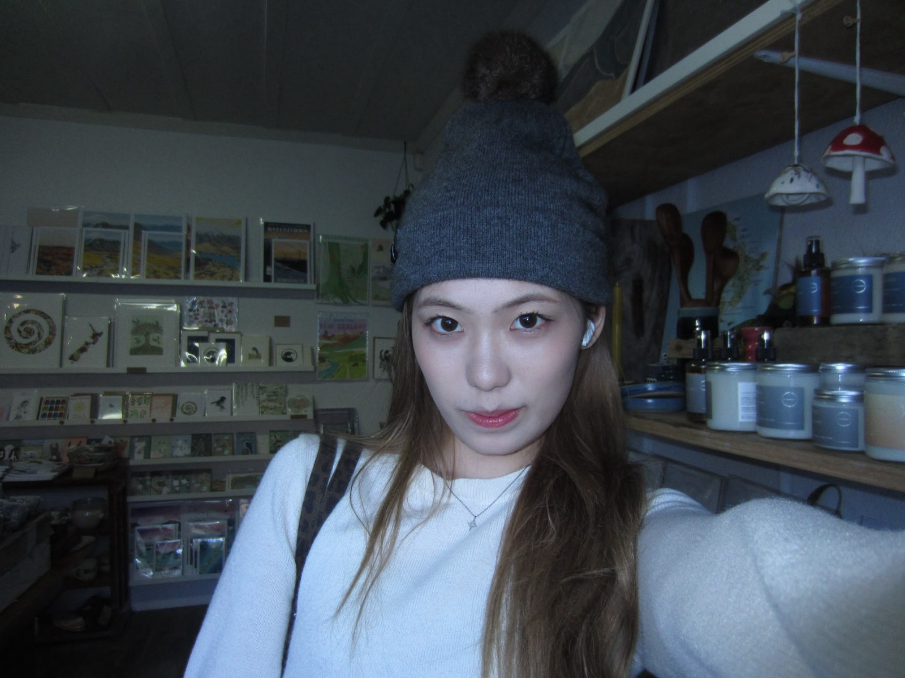

curiosity didn't kill this cat.
it made her a designer.
- UI/UX + graphic designer
- Bachelor of UI/UX, year two
- also answers to Runqi

about me
Hi, I'm Olivia. I study UI/UX and I've spent years making posters, brand identities and way too many sparkles. I like loud colour, chunky type and work with a bit of attitude.
- nameOlivia (Runqi) Li
- studyingBachelor of UI/UX · year 2
- makesinterfaces, brands, posters
- colourpink, obviously
- fan ofBLACKPINK 🖤
- Before I knew what UI/UX was, I was making posters.
- Birthday cards. Fan edits. Way too many sparkles.
- Then I wanted to know why things work.
- So I followed the light into UI/UX.
nine lives
Design is trying, failing and trying again. Lucky cats get nine.
- 01
Graphic design
Posters, branding and social graphics for friends, clubs and myself. Still going.
- 02
UI/UX, year one
Research, wireframes, visual design, my first real prototypes.
- 03
Year two, sem one
Real users, design systems, bigger apps. Done ✓
- 04
Next life
Year two, semester two. Loading…
untangling things
✦ = what I reach for most · currently learning: Framer, motion design, HTML & CSS
tools
- Figma
- FigJam
- Illustrator
- Photoshop
- InDesign
- Miro
- Notion
ux
- User research
- Interviews
- Personas
- Journey maps
- Information architecture
- Wireframing
- Usability testing
- Accessibility
ui
- Prototyping
- Interaction design
- Design systems
- Responsive design
- Typography
- Colour & layout
- Branding
soft skills
- Communication
- Teamwork
- Presenting ideas
- Empathy
- Giving & taking feedback
- Problem solving
how I untangle a problem
- listenresearch & interviews
- find the knotdefine the real problem
- sketchlots of ideas, fast
- prototypemake it clickable in Figma
- test & tweakwith real people, then again
work
if it fits, I sits. projects I jumped into head first →
App
Mobile app case study
UI/UX · research, flows, hi-fi prototype · 2026
02Identity
Brand identity
Graphic · logo, colour system, guidelines · 2026
03Redesign
Website redesign
UI/UX · usability audit, responsive redesign · 2025
04Series
Event poster series
Graphic · type-led posters, print + social · 2025
05Packaging design
Graphic · concept to mockup · 2025
06System
Mini design system
UI/UX · components, tokens, docs · 2026
let's make something
bold together.